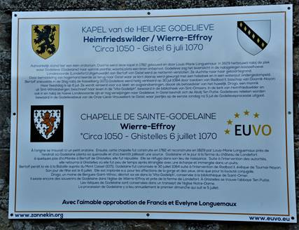
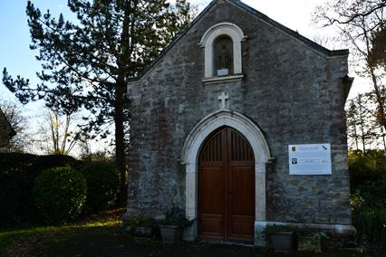
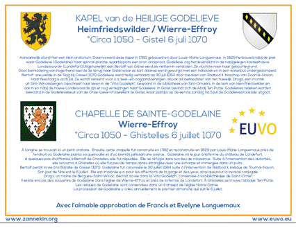
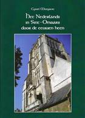

> nieuwsbrief
> 38e jg. - 1e trimester 2020
| Bijdragen over: |

Kaftillustratie: het
ondertussen aangebrachte gedenkbord aan de
Ste-Godelievekapel te Heinfriedswilder/Wierre-Effroy
Hernieuwen ledenbijdrage voor
2020
De
jaarwisseling nadert met rasse schreden – en meteen ook het
tijdstip voor het hernieuwen van de bijdragen voor 2020.
Dankzij een zuinig beheer blijft het ons mogelijk om,
niettegenstaande alweer gestegen druk- en portkosten, de
minimumbijdrage te behouden op 29 €. In ruil daarvoor
verzekeren we u de stipte toezending van het nieuwe Jaarboek De Nederlanden
‘extra muros’ – het 42e al – in de meimaand en van de
vier nummers van ons kwartaalblad Nieuwsbrief Zannekin.
Vanaf het bedrag van 35 € boeken we u met dank als steunend
lid. Vereffening graag via onze rekening IBAN: BE13 4648 2202
5139 – BIC: KREDBEBB t.n.v. Vereniging/Stichting,
Paddevijverstraat 2, 8900 Ieper.
Zannekin-Studie-uitstap
2020
Bij onze Studie-uitstap in de loop
van de meimaand komen de Franse Nederlanden in zicht en wel de
streek van Oud Heusden/Vieil Hesdin en Terwaan/Thérouanne. Bij
die gelegenheid steken we ook even door naar
Heimfriedswilder/Wierre-Effroy, waar ondertussen het door
Zannekin gesponsorde en door EUVO geplaatste memobord ter ere
van Sinte-Godelieve reeds aangebracht werd.
Zannekin
Ontmoetingsdag 2020
In oktober ontmoeten we elkaar dan
in de buurt van Aat/Ath en Lessen/Lessines, waar we o.m. het
Reuzenhuis en het Gasthuis Onze-Lieve-Vrouw met de Roos
bezoeken.
KAPEL van de HEILIGE GODELIEVE
te Heinfriedswilder/Wierre-Effroy

De Sinte-Godelieve-kapel met het
nieuwe gedenkbord dat, in samenwerking tussen EUVO en
de Vereniging/Stichting Zannekin, recent gerealiseerd
werd
Aanvankelijk
stond hier een klein oratorium. Daarna werd deze kapel in 1782
gebouwd en door Louis-Marie Longuemaux in 1829 herbouwd nabij
de plek waar Godelieve (Godelaine) haar spinrok
plantte, waarbij plots een bron ontsproot. Godelieve zag het
levenslicht in de nabijgelegen kasteelhoeve Londesvoorde (Londefort).
Uitgehuwelijkt
aan Bertolf van Gistel werd ze niettemin verstoten. Ze
vluchtte naar haar geboortegrond. Door
bemiddeling van hogerhand keerde ze terug naar Gistel waar ze
kort daarop werd gewurgd met een halsdoek en in een waterput
ondergedompeld. Bertolf sneuvelde in de Slag bij Cassel
(1071).
Godelieve
werd heilig verklaard op 30 juli 1084 door toedoen van Radbod
II, bisschop van Doornik-Noyon. Haar feestdag is op 6 juli. Ze
wordt vereerd voor o.a. keel- en oogaandoeningen, alsook als
behoedster van het huwelijk. Drogo, een monnik uit
Sint-Winoks-bergen, beschreef haar leven in de “Vita
Godeliph”, bewaard in de bibliotheek van Sint-Omaars.
In de
kerk van Heinfriedswilder en ook in en nabij de hoeve
Londesvoorde zijn er nog verwijzingen naar Godelieve.
In
Gistel bevindt zich de Abdij Ten Putte. Godelieves relieken
worden bewaard in de Godelievebeuk van de
Onze-Lieve-Vrouwekerk te Gistel, waar jaarlijks op de eerste
zondag na 5 juli de Godelieveprocessie uitgaat.

Tot zover de tweetalige tekst, van het
recent te onthulde gedenkbord te Heinfriedswilder.
Nieuwe publicatie van Cyriel Moeyaert

In eenzelfde
vormgeving als de beide door de Vereniging/Stichting
Zannekin uitgegeven deeltjes van Cyriel Moeyaerts Nieuw Oud Vlaams. Nieuwe lemma’s ter aanvulling
van het Woordenboek van het Frans-Vlaams, verscheen recent
een derde boekje van Cyriels hand. Het kreeg Het Nederlands in
Sint-Omaars door de eeuwen heen
tot titel en bevat een bundeling van de door de
auteur in de loop der jaren gepubliceerde bijdragen over dit
onderwerp in onze jaarboekenreeks De Nederlanden
‘extra muros’.Het nieuwe boekje telt 60 rijk geïllustreerde
pagina’s.
Het gaat, bij wijze
van hulde, Cyriels, nakende 100ste verjaardag vooraf, die
hij op 23 mei 2020 hoopt te mogen vieren en werd op 1
december jl. voorgesteld in het grensdorp Abele, waar Cyriel
tot recent vaak de zondagsmis opdroeg in de kerk die er op
Frans territorium staat, de enige kerk op Frans grondgebied
waar de liturgie nog in het Nederlands gevierd wordt.
De uitgave kan
besteld worden via overschrijving van 16 € op de Franse
postrekening van het Maison de le bataille – Huis van de
veldslag, 200 rue de la Mairie te 59670 Noordpene: FR76 1670
6050 1016 3916 7110 201, met vermelding van de boektitel en
uw adres.
Op dat adres zijn
overigens nog de beide hoger vermelde voorafgaande titels
uit de door Zannekin gepubliceerde reeks voorhanden en ook
nog het destijds bij het Davidsfonds verschenen Woordenboek van het Frans-Vlaams voorradig.
Op 6
februari 2019 mocht Marten Heida zijn 90e verjaardag vieren.
Bij die gelegenheid blikte hij terug op z’n levensloop en op
de belangrijke rol die hij binnen de Vereniging/Stichting Zannekin gepeeld
heeft. Wie op heugelijke dag aanwezig geweest is kon daarvan
genieten. We brengen hieronder de schriftelijke neerslag van
zijn terugblikken op die dag.
Voorwoord
Marten
Heida tijdens een lezing te Belle/Bailleul n.a.v. een
Zannekin-Ontmoetingsdag
Ik heb
zoon Ruurd Pieter gevraagd of hij mij wilde helpen bij het
samenstellen van een soort van autobiografie. Ik had
natuurlijk er voor kunnen kiezen om mijn levensloop vanaf de
geboorte tot heden aan het papier toe te vertrouwen, maar ik
realiseerde mij dat ik dat al min of meer gedaan had. En wel
in de Nieuwsbrieven van Stichting Zannekin.
Ruurd
Pieter heeft voor het gemak de vrijheid genomen de bewuste
nieuwsbrieven over te nemen van de website van Stichting Zannekin:
www.zannekin.org en daar wat foto's aan toegevoegd.
Tot slot
ben ik veel dank verschuldigd aan dochter Aukje, in
liefdevolle herinnering, mijn kinderen, mijn vriendin Henny en
mijn vrienden. Zonder hun onuitputtelijke hulp en bijstand was
ik nimmer in staat geweest te doen wat ik nu heb kunnen doen.
Ik wens u veel leesplezier.
Marten Heida
Mijn "weg" liep via Vlaanderen
...
"Anders
dan door kinderen en eenvoudigen van geest wordt hij niet meer
gelezen." Aldus Eugéne de Bocks waardeoordeel over het werk
van Hendrik Conscience (in Ons Erfdeel 2001/4,
p. 563). Dit mag niet al te positief van inhoud zijn, zijn Leeuw van Vlaanderen
staat wel aan het begin van mijn "weg" naar Vlaanderen.
Ik zal
een jaar of twaalf geweest zijn, toen ik weer eens bij mijn
grootouders van moederszijde logeerde. Ze waren in mei 1939
"geëmigreerd" vanuit de zuidwesthoek van Friesland (Echten)
naar de noordwesthoek van de buurprovincie Overijssel
(Zwartewatersklooster, een gehucht halverwege Hassel en
Zwartsluis). Inderdaad "geëmi-greerd". Vanuit de woonkeuken
van de boerderij (in Echten) waar ik ben opgegroeid, konden we
de watertoren van Kuinre zien.
Gemeten
naar de beperkte geografische schaal van toen begon daar voor
ons het "buitenland" dat zich onderscheidde door andere
gewoonten en - niet te vergeten - een andere "taal". Spraken
wij thuis Fries, aan de andere kant van de Tjonger was
"Overijssels" de huistaal. Vanwege economische toestanden als
gevolg van de crisis in de jaren dertig verhuisde het gezin
van mijn grootouders naar dit gebied.
Terug
naar De Leeuw van
Vlaanderen. Ik kan me nog herinneren dat dit verhaal een
grote indruk op mij heeft gemaakt. En het heeft mij
nieuwsgierig gemaakt; ik kreeg belangstelling voor het land
waar deze geschiedenis zich heeft afgespeeld. Trouwens ook
mijn meester van de zesde klas heeft daaraan bijgedragen; hij
leerde ons liederen zingen als Boven Gent rijst en
vertelde ons waarom de toren van het belfort "zinnebeeld van 't
verleden" was. Achteraf heb ik er mij over verbaasd dat
in het boerengezin van mijn grootouders uitgerekend dit boek
in de kast stond. Temeer daar het totale boeken bezit uiterst
miniem was. Toch was dit ook weer niet zo verwonderlijk; het
was natuurlijk een goede zaak dat je kon lezen, maar je moest
het niet teveel doen, want dat was zonde van de tijd. En dat
niet alleen. Ik hoor het mijn grootmoeder nog tegen mijn
moeder zeggen: "Die jongen - daarmee bedoelde ze mij -
verleest zijn verstand nog een keer." Ze was blijkbaar
onkundig van de spreuk "Wie leest verrijkt zijn geest".
Door De Leeuw op het
Vlaamse spoor gezet is dit deel van de Neder-landen nooit weer
uit mijn blikveld verdwenen. Daar heeft mijn opgroeien in een
gereformeerd gezin zeker het zijne toe bijgedragen én de
liefde voor geschiedenis die mijn moeder mij heeft meegegeven.
En deze liefde had vooral betrekking op de geschiedenis van
het gereformeerd protestantisme. Ik weet niet meer hoe oud ik
was, toen ik op een gegeven ogenblik de "ontdekking" deed, dat
als er geen inquisitie zou zijn geweest, een groot deel van
Vlaanderen gerefor-meerd en het overgrote deel van mijn
geboortestreek rooms-katholiek zou zijn geweest. Immers rond
1560 is in de Westhoek de bevolking tussen 60 en 100%
gereformeerd, terwijl het percentage in het Friesland van die
jaren zeker niet boven 10% is uitgekomen.
Ook een
ander facet heeft meegespeeld in mijn groeiende belangstelling
voor Vlaanderen en wel dat van de taalstrijd en de daarmee
verbonden ontvoogdingsstrijd. Opgroeiend in een Friestalig
gezin ben ik van jongs af aan vertrouwd geweest met de
spanningen die dit met zich meebrengt.
In 1961
kwam Vlaanderen heel dichtbij toen ik met mijn gezin verhuisde
naar Zaamslag in het Zeeuwse deel van Vlaanderen.
Gebruikmakend van de beperkte eigenvervoersmogelijkheid - de
fiets - ben ik tijdens die eerste jaren van ons verblijf in
dit "schone land" verkenningstochten in de grensstreek wezen
maken. Als later de auto binnen bereik komt, breiden die
tochten zich steeds verder uit en ontstaan ook de eerst
contacten met mensen "aan de andere kant" die ik tot op de dag
van vandaag tot mijn vrienden mag rekenen.
Zijn
vader was aan het eind van de 19e eeuw door de Transvaalse
regering aangetrokken als onderwijzer maar teruggekeerd naar
Nederland na het beëindigen van de Tweede Boerenoorlog (1902).
Na de Tweede Wereldoorlog zijn nogal wat Nederlanders naar
Zuid-Afrika geëmigreerd.
Deze
emigranten gaven een eigen blad uit waarop deze collega was
geabonneerd.
En zo is
deze bal gaan rollen. Ik heb toen contact opgenomen met Jozef
Deleu en mij geabonneerd op Ons Erfdeel. Dat was
midden jaren zestig. Samen met mijn vrouw heb ik één van die
zomers - na de kinderen te hebben "uitbesteed" bij kennissen -
op de bromfiets een eerste verkenningstocht naar
Frans-Vlaanderen (omgeving Sint-Winoksbergen) gemaakt. Op de
terugweg hebben we van de gelegenheid gebruik gemaakt door aan
te leggen bij ‘Huize Oranje’ - toen nog in de dorpskom van
Rekkem.
In 1971
zijn we vanuit het Zeeuws-Vlaamse land verhuisd naar het in de
Gelderse Vallei gelegen Veenendaal.
Enkele
jaren later is dr. Rutten, deze keer in gezelschap van de heer
J. Goethals en hun vrouwen, opnieuw afgereisd naar Veenendaal.
Bij zich hadden ze de drukproeven van het eerste jaarboek
waarvan de paginering nog moest worden vastgesteld. Een halve
zaterdagmiddag zijn we daarmee in de bestuurskamer van de
school waaraan ik toen als hoofd verbonden was, bezig geweest.
Deze
bemoeienis vloeide regelrecht voort uit mijn deelneming aan de
inmiddels gevormde werkgroep "De Oostelijke Nederlanden", die
op gezette tijden bijeen kwam ten huize van dr. Rutten te
Maaseik.
Als
voorzitter was ik de vierde in de rij. In 1989 heeft het
bestuur mij door stemming de hamer als teken van deze
waardigheid toevertrouwd. Waren aanvankelijk de vergaderingen
soms gekenmerkt door interne spanningen - wat het leidinggeven
er niet gemakkelijker op maakte - toen het "vaarwater" weer
rustiger werd, heb ik het werk dat aan deze functie verbonden
is graag verricht, daarbij op voortreffelijke wijze gesteund
door
Driemaal tweetaligheid en
Frans-Vlaanderen
Als je
in de avond van je leven bent aangekomen en dan de moeite
neemt eens in de achteruitkijkspiegel te kijken ontdek je van
er vanuit je verleden lijnen lopen die sturing aan je leven
hebben gegeven. Zo ben ik van jongs af aan vertrouwd geweest
met het fenomeen "tweetaligheid". En dat had zeker niet alleen
betrekking op het duo Fries-Nederlands. In mijn vroegste jaren
was dat nog meer het tweetal Fries-Stellingwerfs. Gezien de
ligging van mijn geboortestreek (Gemeente Lemsterland) ten
opzichte van Stellingwerf werd dat bij ons "Overtjongsters"
genoemd. In het verleden waren nogal wat arbeiders van over de
Tjonger om den brode - ze vonden werk in de veenderij -
uitgeweken naar het gebied ten noorden van deze rivier.
In mijn
kleuterjaren had mijn vader - die alleen het werk op de
boerderij niet aankon - een arbeider die Overtjongers sprak.
Waarom hij met deze man altijd in zijn dialect sprak, heb ik
nooit begrepen. Als kleine jongen die nog niet naar school
hoefde - er was in mijn jonge tijd nog geen kleuterschool -
was ik veel bij "de mannen" en nam met het grootste gemak
Stellingwerfse woorden in mijn mond.
Mijn
tweede ervaring met tweetaligheid zou ik opdoen in 1953 en wel
in mijn eerste standplaats als onderwijzer. Dat was in het
dorp Opende in het Westerkwartier van Groningen. Inderdaad
"Opende"; dit dorp ligt op het "end" van de provincie
Groningen als het ware weggedrukt tegen de grens met Friesland
maar wel duidelijk van deze provincie gescheiden. De weg die
pal langs de grens loopt heet tot op de dag van vandaag De
Scheiding. Echter in taalopzicht was er geen sprake van
scheiding.
De
taalgrens liep in een noord-zuidrichting zo ongeveer dwars
door het uitgestrekte dorp. In het westelijk deel werd
overwegend Fries gesproken en in het oostelijke de
Westerkwartierse variant van het Gronings. Heel duidelijk werd
deze verscheidenheid weerspiegeld in het gezin waar ik de
eerste maanden in de kost ben geweest. Hij sprak Fries en werd
door de kinderen met Heit aangesproken en zij Westerkwartiers
en werd Mama genoemd.
In 1956
verhuisde ik - inmiddels getrouwd en een dochter rijker
geworden - naar het Drentse dorp Nieuwlande dat gelegen is
halver-wege Hogeveen en Coevorden. Was in Opende sprake van
een "aardrijkskundige" tweetaligheid, in dit dorp was het de
sociale structuur van de samenleving die de tweetaligheid
accentueerde. Nieuwlande is in de jaren tussen 1910 en 1920
ontstaan op ontveende grond en gesticht door voor het
merendeel uit de Groningse veenkoloniën afkomstige boeren. Zij
namen uiteraard hun taal mee wat tot gevolg had dat op de
boerderijen Gronings gesproken werd - en nog wordt - terwijl
de arbeiders hun streektaal bezigden: een variant van het
Drents.
Wat dit
alles met Frans-Vlaanderen te maken heeft? Ik heb het later
gezien als een soort van vóór-programmering van datgene
waarmee ik in dit zuidelijkste deel van de Nederlanden te
maken kreeg. Daar heeft natuurlijk ook toe bijgedragen het
tienjarig verblijf in het Zeeuws-Vlaamse dorp Zaamslag. Hier
maakte ik kennis met een streektaal die me "geholpen" heeft
een open oor te hebben voor de taal van het gewest dat
inmiddels al meer dan drie eeuwen de directe band met de
Nederlandse cultuurtaal moet missen.
De "geboorte" van mijn
eersteling en Frans-Vlaanderen:
Dit
opschrift heeft niets te maken met het geboorteproces van onze
oudste dochter. Nee, het heeft betrekking op mijn eerste
publieke pennenvrucht. In 1961 werd ik hoofd van de
Gereformeerde Lagere School in het Zeeuws-Vlaamse Zaamslag. De
school werd bevolkt door kinderen die afkomstig waren uit
Christelijke Gereformeerde, Synodaal Gereformeerde en
Vrijgemaakt Gereformeerde gezinnen. In deze laatste groep
gezinnen was het Gereformeerd Gezinsblad het
lijfblad. Hoofdredacteur was het Tweede Kamerlid Jongeling.
Deze man had grote belangstelling voor dat stukje Nederlands
taalgebied in Noord-Frankrijk en schreef daar van tijd tot
tijd een hoofdartikel over dat mij dan via kinderen in handen
werd gespeeld.
Ik had
mij ondertussen laten betrekken bij de activiteiten van het
Komitee voor Frans-Vlaanderen door daarvan deel te gaan
uitmaken. De vraag die ik mij bij herhaling stelde was: Op
welke wijze kan ik mij dienstbaar maken voor de Frans-Vlaamse
zaak? De naamsverandering van de daarstraks genoemde krant
bracht mij op een idee. Rond de jaarwisseling van 1967-'68 was
de redactie verhuisd van Groningen naar het meer centraal
gelegen Amersfoort, ter gelegenheid van dit feit had men de
krant de naam Nederlands
Dagblad gegeven.
Zowel
deze nieuwe naam als het feit dat de hoofdredacteur
belangstelling koesterde voor Frans-Vlaanderen heeft mij ertoe
aangezet mijn beoogde dienstbaarheid gestalte te geven door
het plegen van mijn eerste artikel. Mijn keus was gevallen op
de Duinkerkse dichter Michiel de Swaen.
Onder
het opschrift De
Zuid-Nederlandse Vondel heb ik het - na er een
Kerstvakantie op hebben zitten zwoegen - de redactie
toegezonden.
Van mijn
leerlingen kreeg ik knipsels overhandigd waardoor ik in staat
gesteld werd het artikel aan vrienden in Vlaanderen toe te
zenden. Eén daarvan was André Demedts; hij reageerde per
kerende post met een buitengewoon bemoedigende brief. Voor mij
is dit "schouderklopje" aanleiding geweest op de nu ingeslagen
weg voort te gaan.
In 1993
kwam er een eind aan deze medewerking als gevolg van het
besluit voortaan meer beroepskrachten te willen inschakelen om
zo jonge mensen een kans te geven zich in de journalistiek te
kunnen bekwamen. Ik heb met dit besluit geen moeite gehad
temeer daar ik inmiddels meerdere "spreekbuizen" tot mijn
beschikking had waaronder het Zannekin-jaarboek en
de Zannekin-Nieuwsbrief.
Ik hoop dat het mij gegeven mag worden dat ik mij ook in de
komende jaren op deze wijze kan blijven inzetten voor de zaak
waarbij ik mij zeer betrokken voel en die tot op de dag van
vandaag doel aan lijn leven geeft.
Een slotakkoord in een
zwanenzangtoonzetting
Wanneer
je je zet tot het "componeren" van een slotakkoord dan kan het
niet anders dat daarin ook een stuk verleden "verklankt"
wordt. Dat wordt duidelijk uit de beelden die voorbij komen in
de achteruitkijkspiegel. Terwijl ik deze woorden neerschrijf
bedenk ik dat ik in mijn twintigste levensjaar er nooit van
heb kunnen dromen dat ik ze in mijn negentigste aan het papier
zou toevertrouwen. Immers ik had toen geen dromen meer; die
waren uiteengespat om de harde werkelijkheid van het leven. Ik
had boer willen worden; in opvolging van mijn vader had ik het
bedrijf willen overnemen. Maar mijn lichamelijke gesteldheid
liet het niet toe dat dit zou kunnen gebeuren. Gelukkig had ik
nog een droom; daarin speelde het boek een grote rol. Ik kwam
terecht in een boekhandel als leerjongen. Aanvankelijk werkte
ik in de zaak; later werd de straathandel mij toebedeeld. (met
een deftig woord werd deze activiteit "colportage" genoemd).
Echter als gevolg van de devaluatie van de gulden in 1948 was
hiermee geen droog brood te verdienen. En zo kreeg mijn
toekomst het karakter van dichtgeplakt te zijn.
Wat is
het dan een zegen iemand te mogen ontmoeten die zich voor je
wil inzetten.
Via
Opende (een dorp in het Groningse Westerkwartier) en
Nieuwlande (het dorp van de bekende verzetsstrijder Johannes
Post en gelegen halverwege Hoogeveen en Coevorden in de
provincie Drenthe) kwam ik in april 1961 met mijn gezin
terecht in Zaamslag, een dorp in het Zeeuwse deel van
Vlaanderen.
Daar is
de bal gaan rollen. Ik ontdekte daar dat er ook nog een deel
van Vlaanderen in Frankrijk lag en dat er een groep mensen was
die zich inzette voor dat sterk verwaarloosde deel van het
Nederlands taalgebied. Deze belangstelling heeft ertoe geleid
dat ik me heb laten betrekken bij de activiteiten van het
Komitee voor Frans-Vlaanderen.
Onder
dit kopje heb ik mijn bijdragen geschreven tot het voorjaar
van 2003; ik werd toen opgevolgd door de huidige voorzitter
Leo Camerlynck. De reden van mijn terugtreden had alles te
maken met het ziektebeeld van mijn vrouw. Ik kon er niet meer
zeker van zijn dat ik in het vervolg leiding zou geven aan de
bestuursvergaderingen. Ik huldigde het standpunt dat een
voorzitter - met uitzondering van ziekte - aanwezig behoorde
te zijn.
Met de
voorzittershamer nam de nieuwe voorzitter ook de "pen" over.
En toch wilde ik wel verder kopij leveren voor de Nieuwsbrief.
In overleg met
Natuurlijk
heb
ik nu af te rekenen met bepaalde gevoelens van weemoed. Ik zet
met deze laatste "Zijlijn"
een streep onder mijn activiteiten voor een vereniging die mij
in de voorbije jaren zeer na aan het hart heeft gelegen. Maar
ik blijf niet in deze gevoelens steken; die van de
dankbaarheid hebben duidelijk de overhand. Dankbaar ben ik
voor alles wat ik zowel op het bestuurlijke als het
redactionele vlak voor de Vereniging Zannekin heb mogen en
kunnen doen. Bovenal ben ik dankbaar voor de vele ontvangen
blijken van vriendschap die ik op mijn beurt heb mogen
beantwoorden als teken van onze verbondenheid.
Ten slotte
Wanneer
ik inderdaad mijn vader zou zijn opgevolgd zou mijn levensloop
er heel anders uitgezien hebben. Ik zou waarschijnlijk nooit
in Zeeuws-Vlaanderen terecht gekomen zijn. Luidens het
volkslied van dit stukje Nederland achter de Westerschelde
maakt het - als gevolg van de bevroren frontlinie - wel deel
daarvan uit.
Maar in
historisch opzicht is het eeuwenlang verbonden geweest met
Vlaanderen. Mede dankzij mijn lidmaatschap van het Komitee
voor Frans-Vlaanderen heb ik met dit Vlaanderen kennis
gemaakt.
En het
is door de gesprekken met André Demedts dat ik zicht mocht
krijgen op de ontvoogdingsstrijd. Eén uitspraak van hem heeft
mij diep geraakt en is richtinggevend geweest voor mijn
groeiende belangstelling voor de achtergronden van deze
strijd.
Die
uitspraak luidde: "Hadden we niet zoveel tijd en energie
moeten steken in onze strijd, we zouden veel verder
gestaan hebben.”
Ik kom
tot een afsluiting. Op één van de kerkhoven in
Frans-Vlaanderen staat een grafsteen waarop behalve de naam
van de overledene ook plaats is ingeruimd voor diens
levensdevies. Dat luidt: "Wees Vlaming dien God Vlaming
schiep". Deze woorden getuigen van een gezond zelfbewustzijn.
Ik ben dankbaar dat ik gedurende de voorbije halve eeuw
getuige heb mogen zijn van dat toenemend zelfbewustzijn in het
kader van de ontvoogdingsstrijd. En met deze verwoording van
dat gevoelen heb ik voor deze laatste "Zijlijn" de toon
gezet.
Marten Heida
Op vrijdag 29
november 2019 vond in het Gemeenschapscentrum “et Huys” te
Ukkel de uitreiking van de Albert de Cuyperprijs 2019
waarbij de erepenning toegekend werd aan uw dienaar. Het was
een druk bijgewoonde plechtigheid. Ook een aantal
Zannekin-leden deden de verplaatsing. Ze vroegen mij mijn
lezing in onze Nieuwsbrief af te drukken. Dit zal in het
volgende nummer verschijnen. Hierna vindt u alvast enkele
excerpten uit die toespraak, die vooral betrekking hebben op
het werkterrein van Zannekin.
“Ukkel en
zeer wijde omgeving” stond in de uitnodigingsbrief te lezen.
Van Ploegsteert tot Gemmenich verkende ik de steden en dorpen
langs de Vlaams-Waalse taalgrens. Ik nam en neem nog steeds
deel aan culturele gebeurtenissen in Komen-Waasten, Moeskroen,
Vloesberg, Voeren. In Edingen hield ik een nieuwe afdeling van
de Orde van den Prince boven de doopvont. In Ostbelgien en het
Arelerland mogen ze ook op mij rekenen.
Als
Orangist en Heel-Nederlander ben ik uiteraard voor de
hereniging der Nederlanden, zeg maar de Benelux plus –
vanzelfsprekend! - Frans-Vlaanderen. Indien die Boergondische
Kreits nu nog zou bestaan, zou dit het rijkste gebied ter
wereld zijn.
Voor
Frans-Vlaanderen heb ik altijd een warme liefde gekoesterd.
Zoals ik reeds meldde, stammen mijn voorouders langs
vaderszijde uit Frans-Vlaanderen. Als ik er kom, heb ik het
gevoel alsof ik er nooit ben weg-gegaan. Sommige lieflijke
dorpjes zijn een levend Bokrijk. De Vlaamse ziel is er zelfs
vaak intenser dan bij ons.
Als
voorzitter van de Stichting Zannekin tracht ik mijn steentje
bij te dragen tot de verdere culturele ontplooiing van dit
stukje Uitgesteld Paradijs, zoals Benno Barnard dat zo mooi
omschrijft.
Djoos
Utendoale, pater Joris de Clerck, een neef van mijn
grootvader, schreef de tekst van het Frans-Vlaamse volkslied
‘Nee’w megaen nuus Vlaemsch nie laeten’. Ook schreef hij deze
verzen:
Ê vrind is lik ê stekkerdroad,
Je kut'dr'an vaste roak'n;
En ojje were weg wult goan,
'T doe zeër je los te moak'n.
Maar
Zannekin kijkt ook naar het Oosten en het Zuiden, waar de
cultuur der Nederlanden nooit weg is geweest. Het Walenland,
Luxemburg, de Duitse grensgebieden zoals het Land van Kleef,
Bentheim, Oost-Friesland genieten onze ruime belangstelling.
Als lid van
het eerste uur verleen ik graag mijn medewerking aan de
vereniging “Fläming – Flandern eV” met zetel in
Lutherstadt-Wittenberg. De Fläming strekt zich uit over de
Duitse deelstaten Sachsen-Anhalt en Brandenburg. In het
noorden is het begrensd door Berlijn en Maagdenburg en in het
zuiden door Halle-an-der-Saale. In de middeleeuwen trokken
Vlamingen naar deze wondermooie streek. Maar ook elders in
Duitsland onderhoud ik goede contacten.
Even goede
contacten blijf ik koesteren met Polen. Agata
Szubert-Kowalska, docente Nederlands in Wrocław of Breslau
schreef mij: Polen is trots op u. In dat land net als in de
overige voormalige Oostblok-landen, de Baltische Staten en
Rusland wordt op veel plaatsen Neder-lands onderwezen; het mag
op een ruime belangstelling bogen. De situatie is er
rooskleuriger dan bij voorbeeld in Amsterdam.
Het is
afrijd een groot genoegen lezingen te houden in Duitsland,
Polen en elders in Oostland.
(…..)
Eind
van de tachtiger jaren van de vorige eeuw hielp ik samen met
Michèle Goslar en nog een paar andere vrienden mee aan de
oprichting van het Internationaal Documentatiecentrum
Marguerite Yourcenar dat nog altijd bijzonder actief is. Van
die grote dame, de in Brussel geboren Frans-Vlaamse
schrijfster Marguerite Cleenewerck de Crayencour - beter
bekend onder haar anagram Marguerite Yourcenar - heb ik onder
meer onthouden wat zij in een interview antwoordde op de vraag
van Mathieu Galey:
"Vous
sentez-vous flamande, …..?", en haar antwoord
luidde: "Je n'ai
repensé à mes origines flamandes que sur le tard, lors de
la rédaction d'’Archives du Nord’. Oui, en
me penchant sur ces ancêtres, j'ai cru reconnaître en moi un
peu de ce que j'appelle 'la lente fougue flamande'. Mais je
suis française, autant que flamande...". Bij een bezoek aan Belle en Sint-Jans-Cappel in
Frans-Vlaanderen zei ze daarbij nog: “Je suis Flamande et
citoyenne du monde”.
En zo voel ik mij ook. Ik ben
Vlaming én wereldburger, en ik voel er mij goed bij.
Ik heb het geluk gehad veel te
mogen reizen. En wie oog heeft voor de sporen van de cultuur
uit onze Lage Landen bij de Noordzee komt nooit van een kale
reis terug.
(…..)
Ja, zelfs de Walen waren
Vlamingen, men denke maar aan Roger de le Pasture uit Doornik
en Jean Gossart uit Maubeuge, die in Brussel hun naam lieten
vernederlandsen tot respectievelijk Rogier van der Weyden en Jan Gossaert
van Mabuse, een je hebt Joachim Patinir uit Bouvignies bij
Dinant en Robert Campin, de “Maître de Flémalle” uit Doornik.
Bij de musici heb je Josquin des Prez uit Condé-sur-Escaut,
Roland de Lattre of Roland Lassus uit Bergen, Johannes
Ockeghem uit Saint-Ghislain, die aan de Italiaanse hoven
bekend stonden als “Fiamminghi”.
Leo Camerlynck, Voorzitter Stichting
Zannekin
Edouard Michielsstraat 51, 1180 Ukkel /
Brussel
e-post: leo.camerlynck@skynet.be
celfoon : 00 32 485 630 227
NB: in de volgende Zannekin-Nieuwsbrief
leest u ook een meer uitgebreid algemeen verslag van de
plechtigheid.